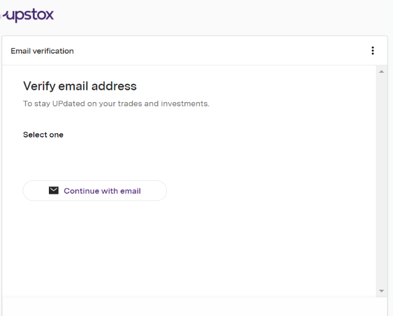

How can I open a new Trading and Demat account?
To open a new account, simply follow these steps:
Step 1 : Visit https://upstox.com and enter your mobile number and click ‘Start Investing’ or you can click on 'Create Account'.
Or you can download our app via this link https://upstox.com/upstox-pro-mobile/
Step 2 : If you proceed via our website, a new page will open where you have to sign up with your email address and mobile number
Step 3: Verify your mobile number and create a new 6- digit PIN, next confirm your PIN
Step 4: Verify your email address and proceed further for the account opening process


Step 5: You will receive an OTP on your mobile number and email address for verification.

Step 6: The following documents will be required in the account opening process. Keep them handy (Aadhaar and PAN card) and click on continue.
Step 7: Enter your PAN card number along with your Date of Birth as per the PAN card and click ‘Next’.
Step 8: Enter your 'Personal Details' and click ‘Continue’

Step 9: After clicking on 'Continue' the next step is to verify your address details

Step 10: Enter your digital signature in the white box.

Step 11: Click ‘Connect your Digilocker with Upstox’ (Aadhaar should be linked with a mobile number). If you connect to Digilocker then you do not have to upload any details. Click on ‘Connect now’.

Step 12: The next screen will ask your permission to allow data sharing with Upstox via Digilocker, click on 'Allow' and 'Proceed'.